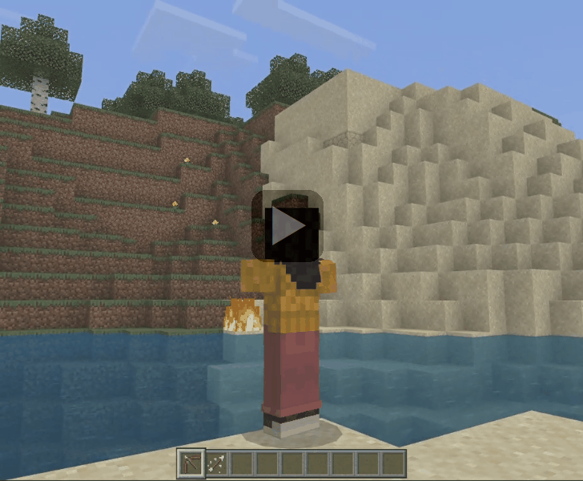
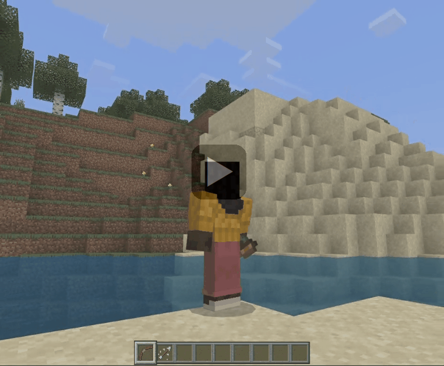
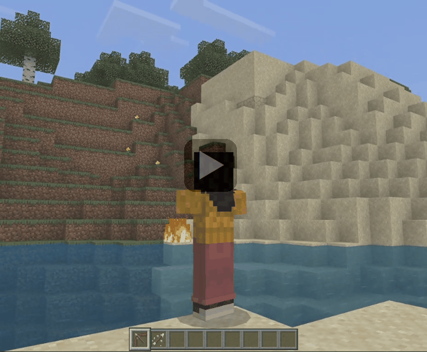
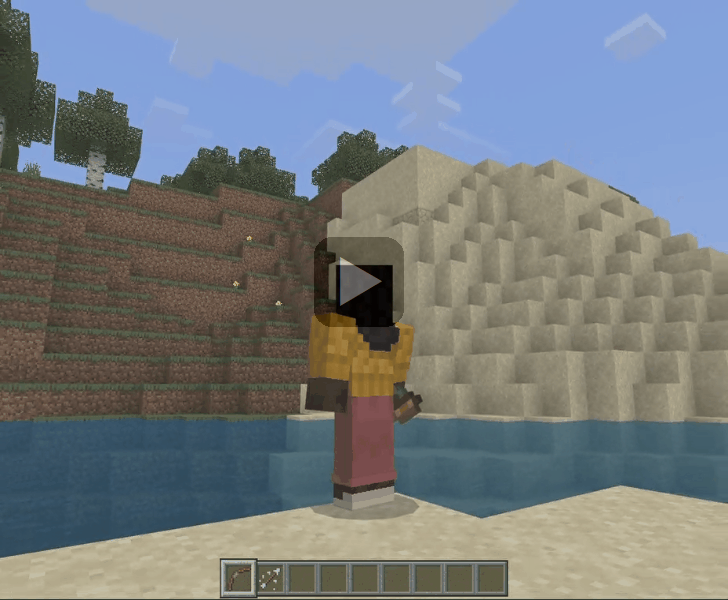
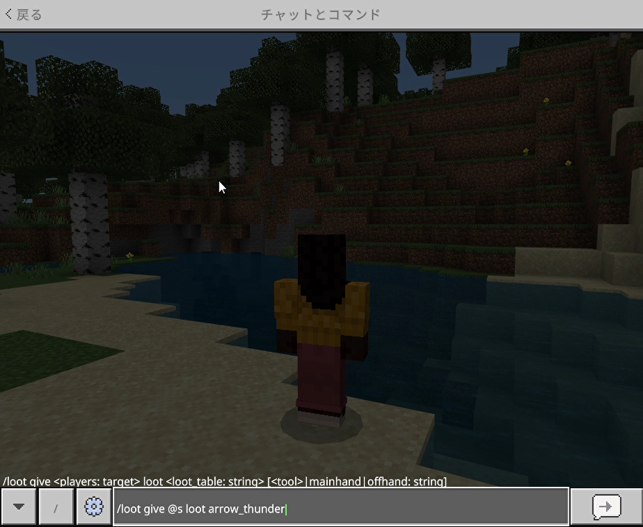
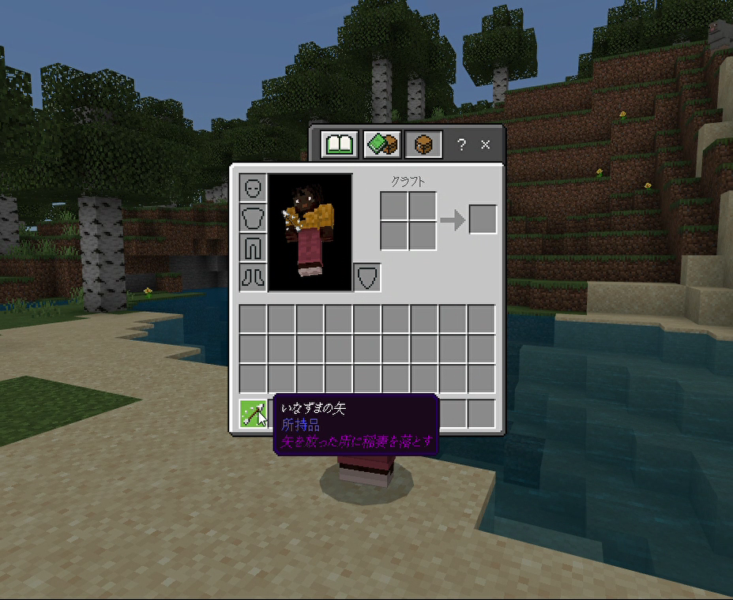
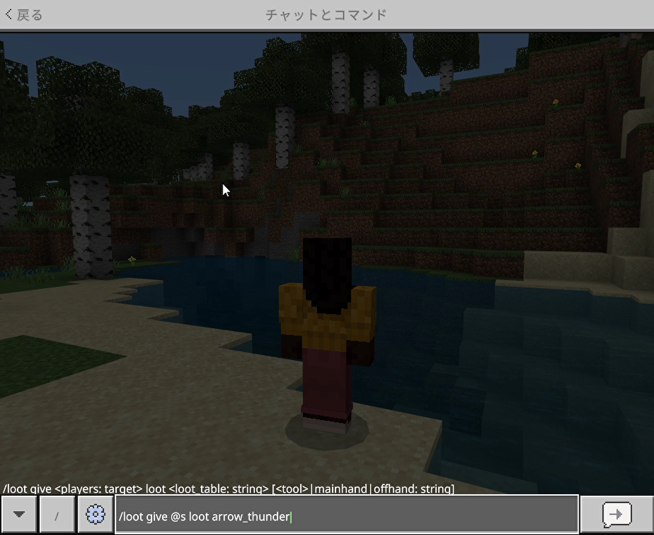
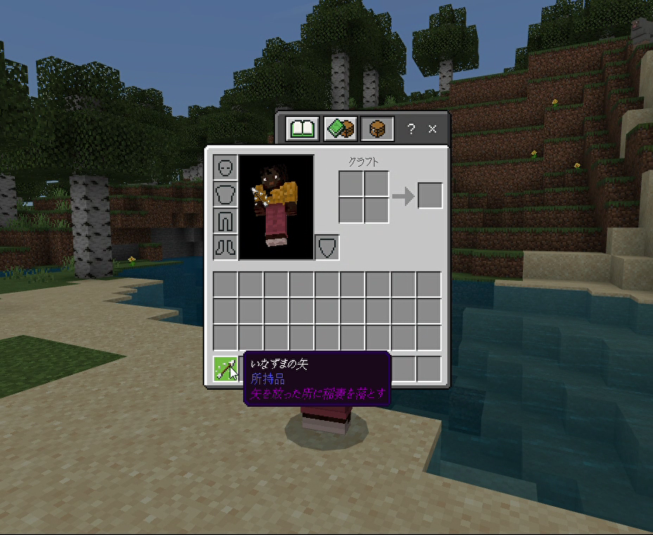

【いなずまの矢】
はじめに
以下のように矢を放った場所へ稲妻を落とせます。

ちなみに先に作っていた「いなずまの弓」とコンボするとこんなイメージ。

これで安全に帯電クリーパーやピグリンも量産し放題でしょう。

ちなみに先に作っていた「いなずまの弓」とコンボするとこんなイメージ。

これで安全に帯電クリーパーやピグリンも量産し放題でしょう。
「いなずまの矢」の取得
本環境のビヘイビアパック／リソースパックなどのアドオンパックを適用しておけば、以下の方法でユニークアイテムとして「いなずまの矢」が手に入ります。
▶ネットショップ


ショップで購入する場合
以下のショップで購入できます。▶ネットショップ
コマンドで取得する場合
以下はワールドオーナーやシステム組み込み用としてコマンドで取得する方法です。

サーバー側の実装
「いなずまの弓」の時と同様に今回のアイテムの実装では"ItemUsed"というサブスクライブイベントを使用しています。
マインクラフト上でアイテムを使ったと認識されると発生するイベントのようで、フレームワークを使って以下の内容を実装しています。
※サブスクライブイベントの処理内容については>> こちらでご紹介しています。
「いなずまの矢」を放った時に発生するイベントデータの形式
今回の実装では「いなずまの弓」を作った時と処理フローが少し異なります。
上記の事から大きく分けて二つの大きな違いがあります。
まず一つ目はイベントが２回発行されるという事です。
つまり「弓を使ったイベント」⇒「矢を放ったイベント」の順で２回発行されます。
そして二つ目の違いは放った矢にタグを付与しているところです。
これはJava版でも同じでしたが弓で矢を放つと別のエンティティ（矢）としてスポーンしますので、「いなずまの矢」を放ったプレイヤーの矢（エンティティ）にタグを付与する事で特別な矢である事を認識させます。
そして稲妻を落とす時（summonコマンド発行時）にターゲットセレクタでタグを指定するようにしています。
これをしておかないと通常の矢を放った時でも発動してしまいます。
あと忘れてはいけないのはWebsocketサーバーからはexecuteコマンドを発行できないという事です。
元々このコマンドはエンティティから実行されるように設計されているようなのでWebsocketサーバーはエンティティだと認識されていないからです。
そのため今回はWebsocketサーバーからfunctionコマンドを発行する事で実際のコマンド処理をビヘイビアパックで賄うようにしています。
以上の事を踏まえて今回は以下のように実装しています。
まずは下記で今回用のステータス名を追加定義します。
app/CommandUnits/CommandStatusEnumForMinecraft.php
コマンド名と処理（関数）の関係を以下のメソッドへ追加して紐づけを行います。
※以下の黄色の部分が今回追加したところです。
app/CommandUnits/CommandForMinecraft.php
※ここでは
※以下の黄色の部分が今回追加したところです。
app/InitClass/InitForMinecraft.php
「いなずまの弓」を実装した時のUNIT処理を以下のように修正して、２回目の
※以下の黄色の部分が今回追加・修正したところです。
app/CommandUnits/CommandForMinecraft.php
※
※
※ここでは２つ目の
app/CommandUnits/CommandForMinecraft.php
マインクラフト上でアイテムを使ったと認識されると発生するイベントのようで、フレームワークを使って以下の内容を実装しています。
※サブスクライブイベントの処理内容については>> こちらでご紹介しています。
「いなずまの矢」を放った時に発生するイベントデータの形式
{
"body":
{
"count":<数字>,
"item":
{
"aux":411,
"id":"arrow",
"namespace":<文字列>
},
"player":
{
"color":<16進数？>,
"dimension":<数字>,
"id":<数字>,
"name":<文字列>,
"position":
{
"x":<数字>,
"y":<数字>,
"z":<数字>
},
"type":<文字列>,
"variant":<数字>,
"yRot":<数字>
},
"useMethod":<数字>
},
"header":
{
"eventName":"ItemUsed",
"messagePurpose":<文字列>,
"version":<数字>
}
}
今回の実装では「いなずまの弓」を作った時と処理フローが少し異なります。
【いなずまの弓の場合】
- (1)ItemUsedイベント（弓を使った時）の発生
- (2)稲妻を落とす座標を計算してsummonコマンドを発行
【いなずまの矢の場合】
- (1)ItemUsedイベント（弓を使った時）の発生
- (2)ItemUsedイベント（矢を放った時）の発生
- (3)放った矢にタグを発行
- (4)放った矢の場所にsummonコマンドを発行
上記の事から大きく分けて二つの大きな違いがあります。
まず一つ目はイベントが２回発行されるという事です。
つまり「弓を使ったイベント」⇒「矢を放ったイベント」の順で２回発行されます。
そして二つ目の違いは放った矢にタグを付与しているところです。
これはJava版でも同じでしたが弓で矢を放つと別のエンティティ（矢）としてスポーンしますので、「いなずまの矢」を放ったプレイヤーの矢（エンティティ）にタグを付与する事で特別な矢である事を認識させます。
そして稲妻を落とす時（summonコマンド発行時）にターゲットセレクタでタグを指定するようにしています。
これをしておかないと通常の矢を放った時でも発動してしまいます。
あと忘れてはいけないのはWebsocketサーバーからはexecuteコマンドを発行できないという事です。
元々このコマンドはエンティティから実行されるように設計されているようなのでWebsocketサーバーはエンティティだと認識されていないからです。
そのため今回はWebsocketサーバーからfunctionコマンドを発行する事で実際のコマンド処理をビヘイビアパックで賄うようにしています。
以上の事を踏まえて今回は以下のように実装しています。
キューとステータスUNITの登録
今回はイベントが２回発行される事から「いなずまの弓」実装時のコマンドをそのまま使うのでステータス名のみを追加します。まずは下記で今回用のステータス名を追加定義します。
app/CommandUnits/CommandStatusEnumForMinecraft.php
case ARROW = 'arrow';
コマンド名と処理（関数）の関係を以下のメソッドへ追加して紐づけを行います。
※以下の黄色の部分が今回追加したところです。
app/CommandUnits/CommandForMinecraft.php
public function getUnitList(string $p_que): array
{
$ret = [];
・
・
・
if($p_que === CommandQueueEnumForMinecraft::ITEM_USED->value)
{
$ret[] = [
'status' => CommandStatusEnumForMinecraft::START->value,
'unit' => $this->getItemUsedStart()
];
$ret[] = [
'status' => CommandStatusEnumForMinecraft::ARROW->value,
'unit' => $this->getItemUsedArrow()
];
}
return $ret;
}
新規実装箇所
受信したイベントデータをコマンド名へ変換する処理を以下のコマンドディスパッチャーへ追加します。※ここでは
arrowというアイテム名を検知しています。※以下の黄色の部分が今回追加したところです。
app/InitClass/InitForMinecraft.php
public function getCommandDispatcher()
{
return function(ParameterForMinecraft $p_param, $p_dat): ?string
{
$minecraft = $p_param->isMinecraft();
if($minecraft === true)
{
・
・
・
if(isset($p_dat['data']['header']['eventName']) && $p_dat['data']['header']['eventName'] === 'ItemUsed')
{
// 弓イベントの場合
if($p_dat['data']['body']['item']['id'] === 'bow')
{
return CommandQueueEnumForMinecraft::ITEM_USED->value;
}
// 矢イベントの場合
if($p_dat['data']['body']['item']['id'] === 'arrow')
{
return CommandQueueEnumForMinecraft::ITEM_USED->value;
}
}
・
・
・
}
}
}
「いなずまの弓」を実装した時のUNIT処理を以下のように修正して、２回目の
ItemUsedイベントに備えてgetItemUsedArrowメソッドのUNITへ処理を繋ぎます。※以下の黄色の部分が今回追加・修正したところです。
app/CommandUnits/CommandForMinecraft.php
protected function getItemUsedStart()
{
return function(ParameterForMinecraft $p_param): ?string
{
$p_param->logWriter('debug', ['MINECRAFT ITEM_USED:START' => 'START']);
// 受信データの取得
$rcv = $p_param->getRecvData();
// ディスパッチャー強制
$p_param->setForcedDispatcher(true);
// 弓タイプの設定
$p_param->setTempBuff(['bow_type' => $rcv['data']['body']['item']['aux']]);
// いなずまの弓以外
if($rcv['data']['body']['item']['aux'] !== 401)
{
return CommandStatusEnumForMinecraft::ARROW->value;
}
$x = (float)$rcv['data']['body']['player']['position']['x'];
$y = (float)$rcv['data']['body']['player']['position']['y'];
$x = (float)$rcv['data']['body']['player']['position']['z'];
$y_rot = (float)$rcv['data']['body']['player']['yRot'];
$y_rot_abs = abs($y_rot);
// Z座標の計算
$z = cos(deg2rad($y_rot_abs)) * 5;
// X座標の計算
$x = sin(deg2rad($y_rot_abs)) * 5;
if($y_rot > 0)
{
$x = -$x;
}
// コマンド送信
$cmd_data = $p_param->getCommandDataForSummonThunder($x, 0, $z, $rcv['data']['body']['item']['id']);
$data =
[
'data' => $cmd_data
];
$p_param->setSendStack($data);
return CommandStatusEnumForMinecraft::ARROW->value;
};
}
CommandStatusEnumForMinecraft::ARROWステータス名に紐づけた処理（関数）を以下のファイルへ実装します。※
getCommandDataForArrowTagNormalメソッドが通常の矢にタグを付与するコマンド文字列を生成しているところです。※
getCommandDataForArrowTagCheatメソッドが「いなずまの矢」にタグを付与するコマンド文字列を生成しているところです。※ここでは２つ目の
ItemUsedイベントを受信（aux=411）した時にマインクラフトへfunctionコマンドを送信（getCommandDataForThunderArrowメソッドでコマンド文字列を生成）しています。app/CommandUnits/CommandForMinecraft.php
protected function getItemUsedArrow()
{
return function(ParameterForMinecraft $p_param): ?string
{
$p_param->logWriter('debug', ['MINECRAFT ITEM_USED:ARROW' => 'START']);
$sta = $p_param->getStatusName();
// 受信データの取得
$rcv = $p_param->getRecvData();
if($rcv === null)
{
// ディスパッチャー強制
$p_param->setForcedDispatcher(true);
return $sta;
}
// ItemUsed以外のイベントの判定
if(!(isset($rcv['data']['header']['eventName']) && $rcv['data']['header']['eventName'] === 'ItemUsed'))
{
return $sta;
}
// 弓タイプの取得
$bow_type = $p_param->getTempBuff(['bow_type']);
// 通常の矢の場合
if($rcv['data']['body']['item']['aux'] === 0)
{
// コマンド送信
$cmd_data = $p_param->getCommandDataForArrowTagNormal($rcv['data']['body']['player']['name']);
$data =
[
'data' => $cmd_data
];
$p_param->setSendStack($data);
return null;
}
// コマンド送信
$cmd_data = $p_param->getCommandDataForArrowTagCheat($rcv['data']['body']['player']['name']);
$data =
[
'data' => $cmd_data
];
$p_param->setSendStack($data);
// コマンドデータの取得
if($rcv['data']['body']['item']['aux'] === 411)
{
// いなずまの矢
$cmd_data = $p_param->getCommandDataForThunderArrow($rcv['data']['body']['player']['name']);
}
// コマンド送信
$data =
[
'data' => $cmd_data
];
$p_param->setSendStack($data);
return null;
};
}